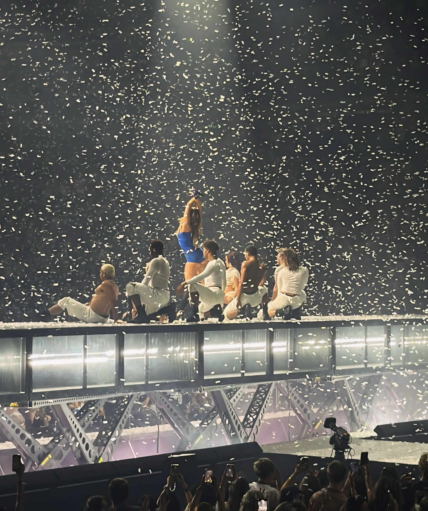
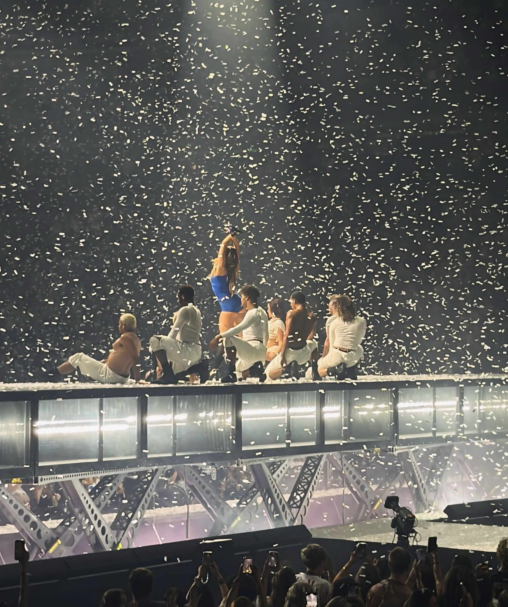

A Great End to a Great Night
At the end of the night, Tate thanked Seattle fans and said it was one of her favorite shows. It was a fun and emotional concert that people will remember.
At the end of the night, Tate thanked Seattle fans and said it was one of her favorite shows. It was a fun and emotional concert that people will remember.
